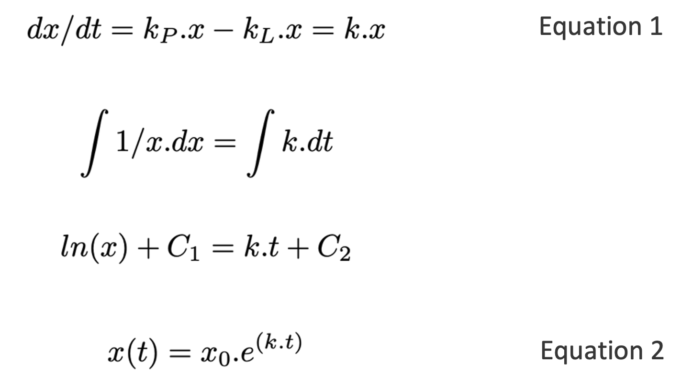
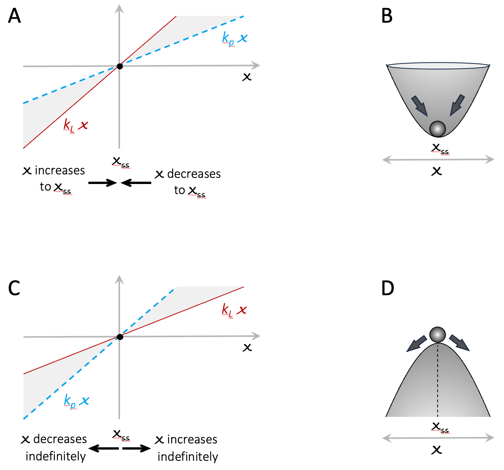
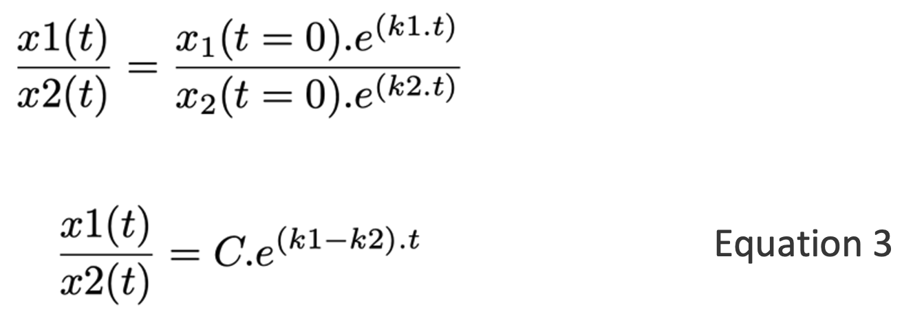
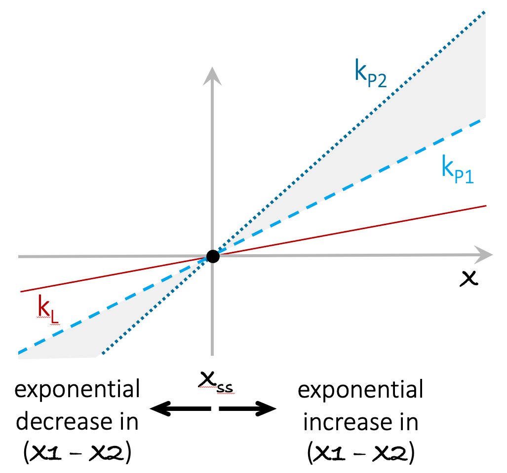
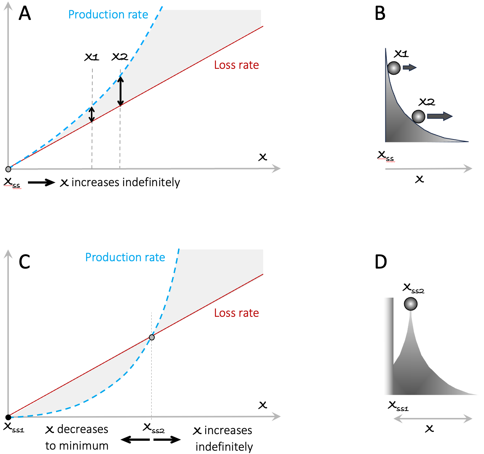
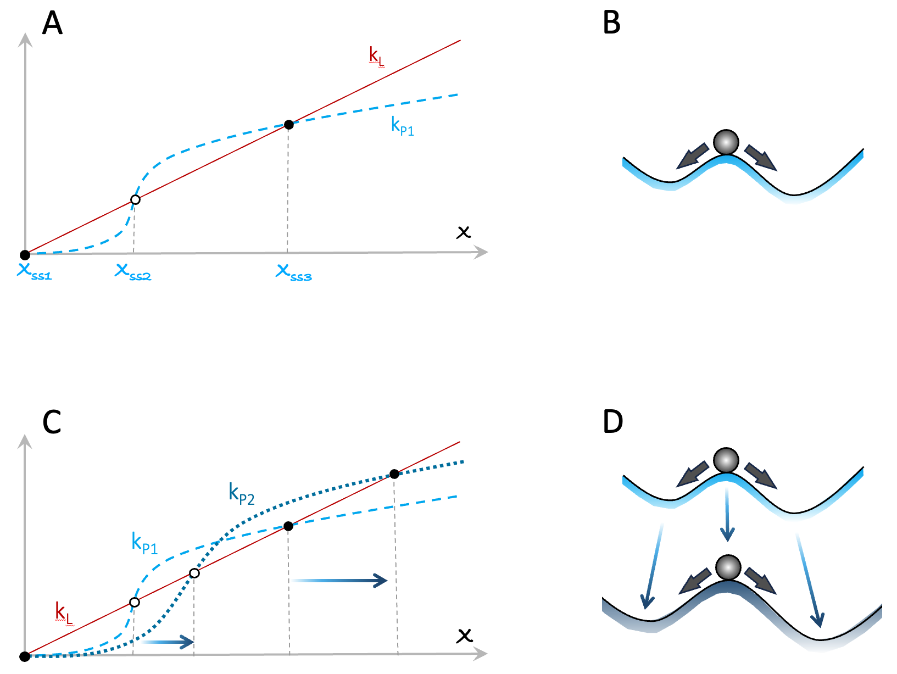
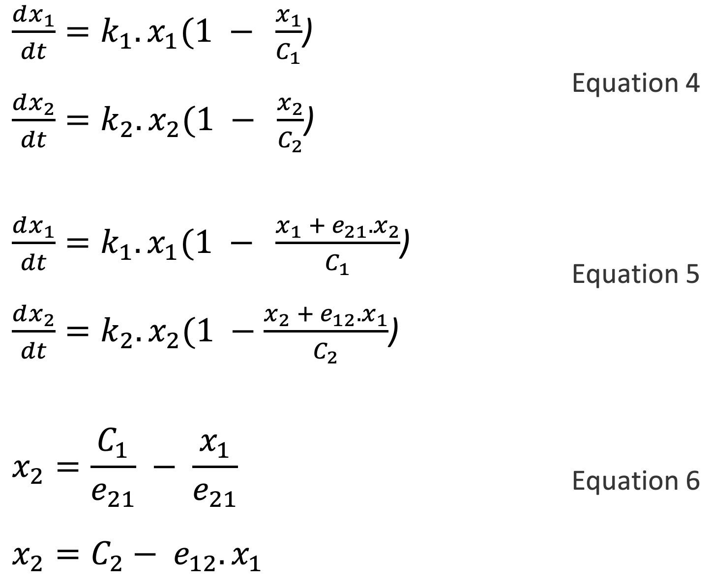
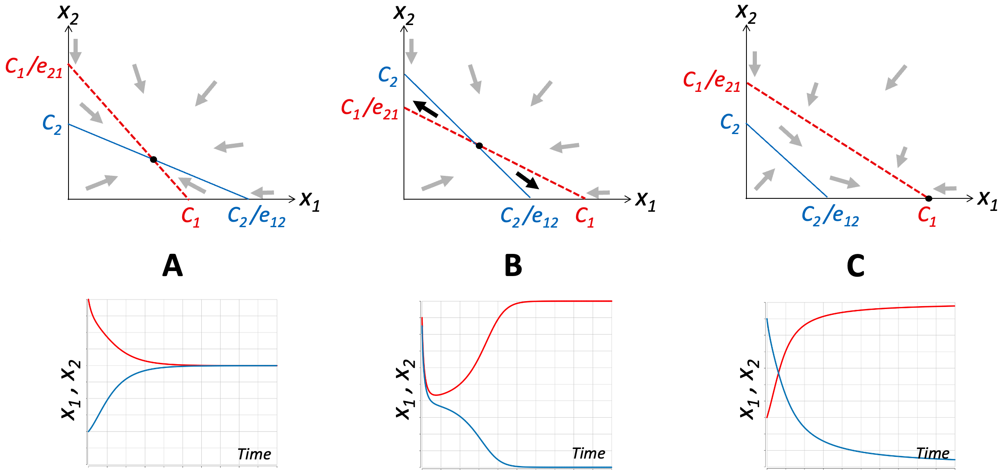
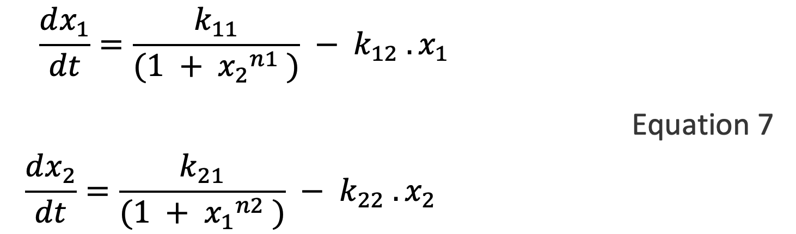
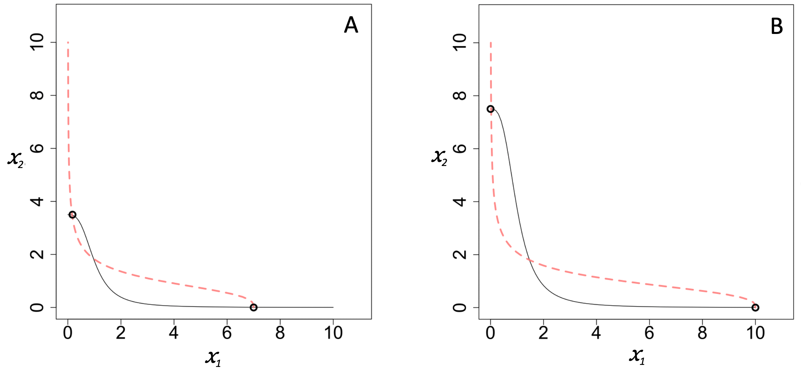

14 Appendix 3: Notes for the Mathematically-Inclined
14.1 Positive Feedback on a Single Entity or Population
The Runaway Polarization (RAP) models presented in this book have been studied widely in different scientific fields under different names. But underlying all of them is a positive feedback loop whose rate is a monotonically increasing function of the input x.
The mechanism by which the strength of the feedback increases over time can take various forms. But the scenario that seems to arise automatically and frequently in nature is when the strength (the feedback rate) of a positive feedback loop is amplified by a second positive feedback loop.
For a concrete example, consider the growth rate of a population of animals or plants (or equivalently, the cumulative balance of a savings account, as in the main text). The growth rate of such a variable is typically proportional to its size, creating a simple linear positive feedback loop that – when the loss rate is smaller than the production rate – results in exponential growth (Equation 2).

Here x0 is the starting size of the population, and k is the growth rate (change in x per unit time), and is the difference between production and loss rates kP and kL. To get an intuitive sense of all the possible behaviors of this model, it is useful to plot the production and loss rates as functions of x. Figure A3.1 illustrates two key scenarios: kp < kL and kp > kL 151. If kp < kL then whatever, the starting size of the population, it will decrease over time until it reaches zero. On the other hand, if kp > kL , then the population will grow indefinitely, at an ever-increasing rate (indicated by the width of the gray-shaded area between the production and loss lines). Note that in both scenarios, there is a steady-state at x = 0 (see black discs). For kp < kL the steady-state is stable and acts as an attractor for all values of x. For kp > kL the steady-state is unstable and acts as a repellent. The behavior of x is analogous to that of a ball rolling around on a curved surface, as illustrated in the cartoons in panels B and D. Finally, for populations of biological organisms, x cannot be less than zero, but for many other situations (e.g. bank account balances) x can become negative. The plots in Figure A3.1 A and C show that the qualitative behavior of the system is symmetric for x below and above zero.

Figure A3.1. Visual characterization of the model in Equation 1. Panels A and C show the production and loss curves. Panels B and D present and intuitive analogy to the system dynamics. In these cartoons, the horizontal dimension is analogous to x. The vertical dimension indicates how strongly the system is pulled towards a stable steady state or away from an unstable steady state. It is intended to evoke the way feedback creates uneven playing fields.
Now consider two populations (x1 and x2), each growing exponentially in the above manner. The relative abundance of the two populations is:

If the two species have exactly the same growth rate (i.e. k1 = k2), then x1(t)/x2(t) = C, i.e. the relative abundance of the two populations remains constant over time. This situation is analogous to the cumulative balances of two savings accounts that have the same interest rate.
In contrast to the above, if the two populations (or savings accounts) have even slightly different growth rates, then the abundances of the x1 and x2 will diverge exponentially over time (see Figure A3.2). This insight is the point of departure for the compound-interest investment models in Chapter 2.

Figure A3.2. Exponential growth leads to exponential divergence between entities with different growth rates. In panel A, the lines marked kP1 and kP2 indicate the production rates of two systems with different growth rates. kL is the loss rate for both parties. The value of x grows exponentially for both x1 and x2. As their growth rates diverge (shaded area), the difference between x1 and x2 also grows exponentially.
The exponential growth of (x1 – x2) in the above scenario has an important implication. In situations where the feedback rate increases with x (e.g. when the interest rate increases with the account balance), two entities subject to the same feedback but starting with different values of x will be subject to different production rates and diverge exponentially.
In the increasing-interest rate model in the main text, I simply pre-specified the schedule of interest rate increases as a series of step functions. More generally, the increase in the feedback (e.g. interest) rate can take the form of any function that increases at a greater than a linear rate. Figure A3.3 presents two examples. In the first example (panels A, B), the increasing production rate is always greater than the loss rate, except at the unstable steady-state at x = 0. Irrespective of its initial value, x will grow larger and larger over time, without bound.

Figure A3.3. Examples of RAP arising from a superlinear production rate. In A, x1 and x2 mark the initial values of two different instances of the model. The double-ended arrows indicate the higher feedback rate (production rate – loss rate) of x2. In In B, the higher rate of change at x2 is indicated by the larger horizontal component of the speed of the ball. Panels C and D portray the situation where the production rate curve is initially below the loss rate curve, creating a stable steady-state at Xss1, and an unstable steady-state at the point marked Xss2. The decreasing curvature of the surface in this figure indicates the greater horizontal displacement of the ball as it rolls down the slope.
For two different instances of this model starting with different initial values x1(t=0) and x2(t=0) (see vertical arrows), the ratio x2(t)/x1(t) will grow over time. This observation holds true for any production rate that starts at zero, curves upward, and never crosses the loss rate curve. If the production rate curves upward but is initially less than the loss rate (as illustrated in the lower panels), we get a stable steady state at x = 0, and an unstable steady state at Xss2, beyond which the system behaves in the same way as in the upper panel.
We can apply the above style of analysis to any combination of production/loss rate functions. For simplicity, I assumed a linear loss rate in Figures A3.1-A3.3. But the loss rate can also be nonlinear. In general, the production and loss rate curves can cross any number of times. Each crossing marks a steady state, and unstable and stable steady states will alternate. One particular case deserves a special mention. Figure A3.4, shows a simple feedback system with two stable steady states and one unstable steady state (which has to be between the two stable states).

Figure A3.4. An example of a positive feedback loop leading to multiple steady states. Panels C and D illustrate how changing the parameters of the system in A/B can move the steady states further apart.
In the main text, I note that in systems involving humans, polarization is often increased because those who can will act to improve their operating conditions. Such improvements can simply open up new opportunities (e.g. a company diversifying its products). Alternatively, improvements can come from changes to a system’s current steady states. Panels C and D in Figure A3.4 present an illustrative example. In this case, changing the feedback parameters of the system in panels A and B has increased the value of the system’s non-zero steady states (e.g. the company’s net earnings).
14.2 Systems of Competing Entities
I mentioned earlier that a very common way for a positive feedback loop to acquire a superlinear feedback rate is through competition for limited resources. We tend to think of competition for limited resources as a purely inhibitory, limiting effect. But in the presence of external activating inputs, or positive feedback loops (as in the above examples), inhibition of an inhibitor amounts to self-activation, i.e. positive feedback.
The model of equation 1, assumes infinite resource availability (the variable x can grow indefinitely). In Equation 4, C1 represents the maximum value of x1 given resource limitations (it is known as the carrying capacity). When x1 = 0, the term (1 - x1C1) in Equation 4 evaluates to 1, there is no resource limitation effect and Equation 4 becomes the same as Equation 1 (i.e. exponential growth). On the other hand, when x1 = C1, (1 - x1C1) becomes zero and x1 will not grow further. In other words, resource limitation puts a limit on growth.

In Equation 5, the rates of change of x1 and x2 include an additional term of the form “eij.x” in the resource limitation factor, reflecting the inhibitory effect of the competing entity. The multiplier eij represents the strength of the inhibitory effect of xi on xj 152. By setting the right-hand side of Equation 5 to zero, we get Equation 6, which describes the steady state loci of x1 and x2 (such curves are known as nullclines). Plots of x2 versus x1 for these two equations are both downward-sloping straight lines. As shown in Figure A3.5 153 these two lines can have three archetypal orientations with respect to each other 154.

Figure A3.5. Runaway Polarization resulting from competition for limited resources between two self-amplifying parties. Each panel illustrates one possible outcome. Panel A corresponds to the situation where the effects of the competitive interactions are weaker than the positive feedback that drives the growth of each entity. The thick arrows show the direction in which x1 and x2 will change given their values at that location (calculated as the vector sum of dx1/dt and dx2/dt in Equation 5). Under these conditions, the system has a single steady state (black disk) where the two parties co-exist. The curves in the lower panel show example simulation results for a system where the equations for x1 and x2 are identical with e21 = e12 < 1. Panel B illustrates the situation where the two parties exert strong competitive effects on each other (all other parameters are the same as in Panel A). Under these conditions, the steady state marked by the black disk is unstable. Whichever party starts off with a higher value will dominate. In the example simulation result shown, the red party (x1) starts off about 5% larger. At the end of the simulation x1 ≅ C1 and x2 ≅ 0. In Panel C, the effect of x1 on x2 is much stronger than the effect of x2 on x1. Thus, even when x1 starts much smaller than x2, it quickly reverses the balance so that ultimately x1 will reach C1 and x2 will become 0 (extinct).
If the competitive interactions between x1 and x2 are weak compared to the intrinsic positive feedback loops on x1 and x2, such that C1 /e21 > C2 and C2 /e12 > C1 (e.g. e21, e12 < 1 and C1 = C2) then competition will not be strong enough to inhibit the intrinsic activity of either party. As shown in Figure A3.5A, the two steady-state loci will cross at a non-zero stable steady state.
If, on the other hand, both competitive inputs are strong enough to inhibit the self-activation of x1 and x2, (C1 / e21 < C2 and C2 / e12 < C1) then the crossing point of the two lines becomes an unstable steady state. If the feedback loops on x1 and x2 are identical, then whichever variable has the larger starting value will dominate. The dominant variable will approach its maximum (aka its carrying capacity), and the other variable will be pushed to zero (see Figure A3.5B).
The third and last possibility is asymmetric competition, in which one party strongly inhibits the other, whereas the other party only weakly acts on the first. As illustrated in Figure A3.5C, in this situation the two steady-state lines do not cross. There is no real competition, the dominant party (upper curve in the figure) always wins and forces the other party to zero.
In population ecology, the behavior in Panel C is referred to as Competitive Exclusion. The model was made popular by the ecologist Garrett Harding in the 1960s 2,3. In verbal terms, the idea goes back at least to Charles Darwin 4. A mathematical version of the model was first proposed by Lotka and Volterra 5,6, and then extensively investigated in remarkable mathematical and experimental detail by the Russian biologist Georgy Gause in 1934 7.
In real ecological systems, predation, migration, and other natural processes often keep populations below the environment’s carrying capacity. In such cases, growth is not resource-limited, and the Competitive Exclusion Principle does not apply 4. But in human societal systems, resource limitation tends to be the rule rather than the exception. Anything with more demand than supply is a limited (“scarce”) resource. And insatiable human demand drives pretty much all desirable physical things to scarcity 155. For example, the earth’s resources, energy from the Sun, and our lifetimes are all finite/scarce resources. In terms of the models discussed here, RAP emerges whenever self-amplifying entities (people, businesses, institutions, etc.) strongly compete for resources that are limited/scarce.
The models above illustrate how RAP-like extreme polarization arises under a wide variety of conditions. But RAP has an additional feature that is not explicit in the above models. In human systems with winners and losers, when the “winning party” reaches its maximum capacity, it can use its newly gained dominant position to reduce or remove the factors that limit its capacity, or find other opportunities for growth. For example, a young job seeker with a college degree will likely get a better-paid job than a high-school graduate. They can then use their greater earnings to make additional high-return investments such as buying a house, or they can fund graduate studies that will further increase their earnings potential. Likewise, a company that beats its competitors to dominate a local market, may then use its secure financial footing to expand to other areas, to diversify its portfolio, or to lobby local regulators for actions and bylaws that improve its earnings potential.
14.3 Alternate Formulation of Competitive Exclusion
In her classic 1988 book Mathematical Models in Biology 156, Leah Edelstein-Keshet highlighted a correspondence between the competitive exclusion model in Figure A3.5B (where initial values determine which of two competitors dominates the other), and a model of mutual inhibition widely used in molecular biology. These models have the form:

Cherry & Adler 8 have provided a fairly comprehensive analysis of this class of models. For n ≤ 1, the system has a single steady state determined by the relative strengths of x1 and x2. For n1 , n2 > 1, such systems have two stable steady states, and which steady state the system settles in depends on the starting values of x1 and x2.

Figure A3.6. Example nullclines for Cherry & Adler’s model of mutual inhibition (i.e. non-zero-sum competition). In panel A, n1 = n2 = 3, (k11 / k11) = 3.5, (k21 / k22) = 7. In panel B, n1 = n2 = 3, (k11 / k11) = 7.5, (k21 / k22) = 10. Steady states are marked by circles.
In Equation 7, k11 and k21 represent the maximum growth rates of x1 and x2, and k11 and k22 represent the loss rates. The ratios (k11 / k11) and (k21 / k22) correspond to the maximal values that x1 and x2 could reach in the absence of mutual inhibition, i.e. their carrying capacities. The examples in Figure A3.6 illustrate how increasing these carrying capacities leads to the system’s steady states moving further apart, further increasing polarization.
14.4 Pedagogic Versus Predictive Models
Models have many different uses 157. As George Box famously said “All models are wrong, but some are useful” 10. All of the above models – as well as those in the rest of the book – are “wrong” in the sense that they are extreme simplifications of processes in the real world and use illustrative functions and parameters. Although the models provide useful insights, we should not confuse them with quantitatively predictive models of specific processes. Human-mediated interaction networks typically have many overlapping feedback loops, and the interactions and strengths of these feedbacks can change over time. Capturing the dynamics of such systems requires lengthy and careful model building and parameter tuning.
Another important distinction to keep in mind is that bi/multi-stable system dynamics can drive RAP, but not all bi/multi-stable systems lead to RAP. The steady-states of a system can be very shallow (weak attractors) or they can be very close to each other. In addition, the basins of attraction of bi/multi-stable systems can be of very different sizes, such that virtually everyone ends up in the same steady state. Finally, note that the time it takes for a human-mediated system to reach one of its steady states may be much longer than the timescales discussed in this book, in which case there is no guarantee that steady states are reached or even approached. The dynamics I describe here do not depend on the existence of steady-states. The only requirement is that the amount of positive feedback increases as a function of the system state/output.
14.5 References
1. Ayala, F. J., Gilpin, M. E. & Ehrenfeld, J. G. Competition Between Species: Theoretical Models and Experimental Tests. Theor. Popul. Biol. 4, 331–356 (1973).
2. Hardin, G. The Competitive Exclusion Principle. Science 131, 1292–1297 (1960).
3. Hardin, G. The Cybernetics of Competition: A Biologist’s View of Society. Perspect. Biol. Med. 7, 58–84 (1963).
4. den Boer, P. J. The Present Status of the Competitive Exclusion Principle. Trends Ecol. Evol. 7, 25–28 (1986).
5. Lotka, A. J. Elements of Physical Biology. (Williams and Wilkins Company, 1925).
6. Volterra, V. Variazioni e Fluttuazioni Del Numero d’individui in Specie Animali Conviventi. (Società anonima tipografica “Leonardo da Vinci, 1926).
7. Gause, G. F. The Struggle for Existence. (Baltimore, The Williams & Wilkins company, 1934, 1934).
8. Cherry, J. & Adler, F. How to make a Biological Switch. J. Theor. Biol. 203, 117–133 (2000).
9. Bolouri, H. Computational Modeling of Gene Regulatory Networks - A Primer. (Imperial College Press, London, UK, 2008).
10. Wikipedia. All models are wrong. https://en.wikipedia.org/wiki/All\_models\_are\_wrong.